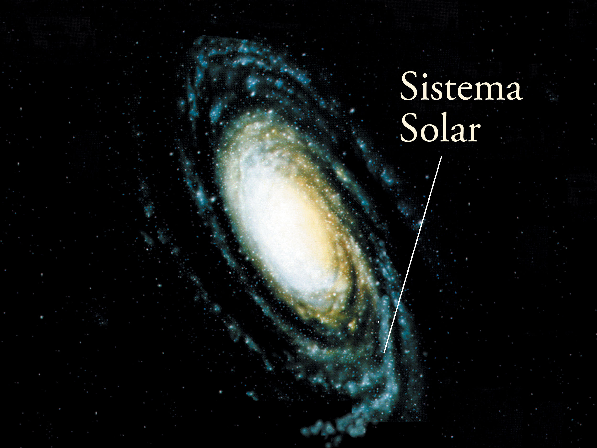

Vivimos en un planeta llamado Tierra, que es parte de nuestro sistema solar. Pero ¿dónde se encuentra nuestro sistema solar? Es una pequeña parte de nuestra galaxia, la Vía Láctea.
Pero existen muchas otras galaxias, además de la nuestra. ¡Son tantas que aún no hemos podido contarlas todas! El Telescopio Espacial Hubble observó una pequeña porción del espacio durante 12 días y descubrió 10 000 galaxias de todo los tamaños, formas y colores. Algunos científicos creen que podría haber unas cien mil millones de galaxias en el universo.
Una galaxia es un conjunto de gases, polvo y miles de millones de estrellas y sus sistemas solares. La galaxia se mantiene unida gracias a la fuerza de gravedad. Las galaxias se clasifican según su tamaño y su forma. Las hay desde enanas, con "solo" decenas de millones de estrellas, hasta gigantes que contienen billones de astros. En cuanto a las formas, pueden ser elípticas, espirales (como la Vía Láctea), lenticulares o irregulares.
Se calcula que hasta el 90% de la masa de cada galaxia es algo distinto a la materia ordinaria; existe, pero no se puede detectar, aunque sí sus efectos. Se le llama materia oscura porque no emite luz. De momento es solamente un concepto teórico que sirve para explicar el comportamiento galáctico.
A veces una galaxia se acerca a otra y acaban chocando. Nuestra Vía Láctea algún día chocará con Andrómeda, nuestro vecino galáctico más cercano. Pero no te preocupes: faltan como cinco mil millones de años para que eso suceda, y aunque sucediera mañana mismo, puede que ni te des cuenta. Las galaxias son tan grandes y están tan expandidas en los extremos que, aunque se choquen entre sí, los planetas y los sistemas solares a menudo no llegan a colisionar.
Actualmente, los científicos han descubierto 3 tipos de galaxias:
El Sistema Solar está en uno de los brazos de la espiral, a unos 25.800 años luz del centro y unos 22.000 del extremo. La Via Láctea és una galaxia grande, espiral y puede tener unos 300.000 millones de estrellas, entre ellas, el Sol. En total mide unos 100.000 años luz de diámetro y tiene una masa de más de dos billones de veces la del Sol.
Analizando la edad de las estrellas que la componen y relacionándolas con el momento en que se produjo el Big Bang ha podido comprobarse que la Vía Láctea es tan antigua -casi- como el propio universo. Y aunque es imposible afirmar con exactitud la edad del universo, existe un consenso científico por el cual se estima que se ha de encontrar entre los 13.761 y los 13.835 millones de años. La edad de la Vía Láctea se situaría en torno a los 13.600 millones de años.
Un año galáctico o cósmico, es el tiempo que tarda el sistema solar en realizar una órbita alrededor del centro de la Vía Láctea. Este se desplaza por el espacio a una velocidad aproximada de unos 800.000 km/h, por lo que las estimaciones indican que medido en años terrestres, debe situarse entre los 225 y 250 millones, es decir la Tierra tiene 18 años galácticos, y la última vez que estuvo en el mismo lugar en el que se encuentra ahora, los continentes se encontraban formando la Pangea y los dinosaurios se extendían por la faz de la Tierra.
Nuestra galaxia, como muchas otras, esta gobernada por un agujero negro. Llamado Sagitario A, este agujero negro supermasivo, tiene una masa equivalente a 4 millones de soles. Hasta el momento nunca hemos podido observarlo directamente ya que se encuentra escondido entre densas y tupidas nubes de polvo y gas. Sin embargo, los astrónomos han podido seguir las órbitas de las estrellas y las nubes de gas próximas al centro galáctico, lo que les permitió advertir su masa.